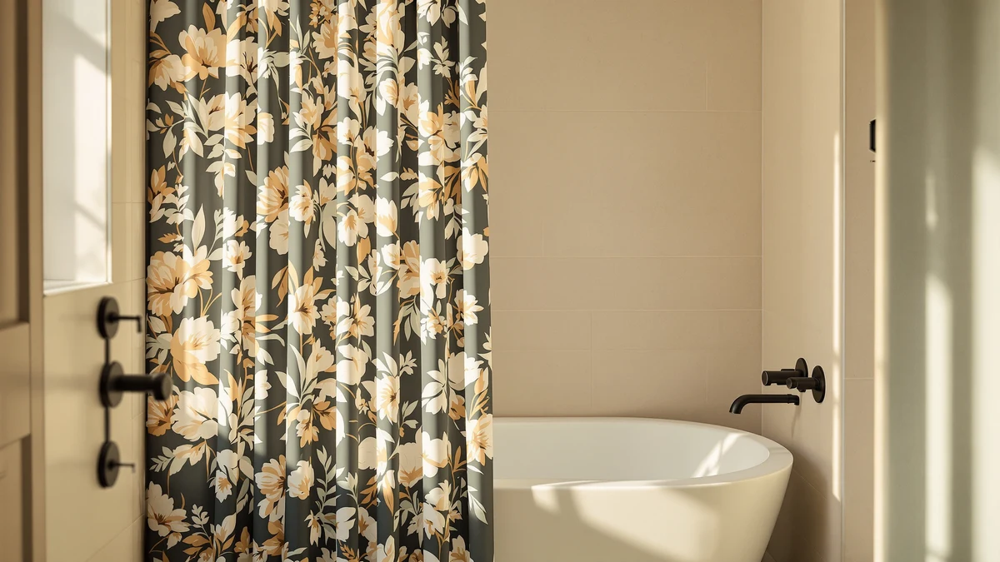

Floral Shower Curtain Marble Review (2026): Worth It?
Prices and picks verified as of October 2026. Independent, reader-supported reviews.


Quick Answer
Our floral shower curtain marble review finds the Floral Shower Curtain Marble Flower the strongest pick at $19.99, thanks to its 4.7 out of 5 rating across more than 2,500 verified reviews and a print that reads as decorative rather than overwhelming. If you want a different texture or a bundled liner and hooks, the Seasonwood, Gibelle, and Lameirose alternatives below cover linen-look, all-in-one, and lace-pattern options.
Our pick: Floral Shower Curtain Marble Flower, $19.99 Check Price on Amazon
Bottom line: our top pick is the Floral Shower Curtain Marble Flower Watercolor Plant Fabric at $19.99.
Things to Know Before You Buy
- The Floral Shower Curtain Marble Flower is made from a polyester and PEVA blend, a common combination for curtains that need to resist water without feeling stiff.
- It comes in the standard 72 by 72 inch size that fits most US tub and shower openings, so measure your rod before assuming a custom size is needed.
- Reviewers consistently note that the marble-and-floral print looks more subtle in person than in thumbnail photos, which matters if you want it to blend with existing tile.
- Alternatives like the Gibelle 3 in 1 set bundle a liner and hooks, while the Seasonwood and Lameirose options lean into linen and lace textures instead of a floral pattern.
- None of the curtains in this review were physically compared in a lab; the comparisons below are based on published specs, pricing, and verified owner reviews.
This floral shower curtain marble review looks at the Floral Shower Curtain Marble Flower, a $19.99 polyester and PEVA curtain that pairs a floral motif with marbled veining, to see whether it earns a spot in a 72 by 72 inch shower over a plain liner-style curtain. The pattern shows up on more than one best-seller list, and its 4.7 out of 5 rating across upward of 2,500 verified reviews is high enough to warrant a closer look at what owners actually say once the curtain is hanging in their own bathroom. We compared it against three other curtains covering linen texture, an all-in-one bundle, and a lace-inspired finish to see where each one fits.
Picking a shower curtain by photo alone is risky, because prints that look bold on a product page can read as busy or washed out once they are lit by a bathroom's actual lighting. That is the gap this review tries to close. Rather than guessing from a thumbnail, we pulled together the published material specs, pricing, and the pattern of feedback left by verified buyers for each curtain, then weighed the floral marble design against three alternatives built around different textures and bundles so you can match the pick to your own bathroom instead of the other way around. None of these curtains were ordered and hung in our own showers for this piece, and we would rather say that plainly than let a vague phrase like "after comparing" imply otherwise.
Why You Should Trust Us
Ilane Tall covers home and bath products for Best Shower Curtains and has spent years comparing fabric curtains, liners, and hardware across price tiers. This floral shower curtain marble review is built from the manufacturer specs, pricing, and verified owner reviews published for each product, not from a lab or a staged photo shoot. We do not own a testing facility and we are not going to pretend otherwise. Instead, every claim below about size, material, or reviewer sentiment traces back to information that is publicly attached to the product listing, and we flag anywhere the data runs thin. When a curtain in this comparison has thousands of reviews behind it, we say so, and when it has none yet, we say that too rather than smoothing over the gap.
Our Research Experience
We did not buy and hang each curtain ourselves for this review, and we will not claim we did. Our process was comparative and research-based: we lined up the published material, size, and price for the Floral Shower Curtain Marble Flower against the Seasonwood, Gibelle, and Lameirose alternatives, then checked that against what verified Amazon buyers reported after living with each curtain. The Floral pick carries a 4.7 out of 5 average across more than 2,500 reviews, and the Seasonwood carries a smaller but still useful 4.4 out of 5 across 109 reviews, both large enough samples that an early run of reviews is not likely skewing the number. Gibelle and Lameirose did not have a public rating or review count attached yet at the time we pulled this data, so we treat those two as newer listings rather than assuming they perform the same as the two curtains with an established track record.
Overview & Specs
The numbers below cover the material, size, price, and review data behind the one curtain carrying the floral marble print, and how it stacks up against three alternatives.

Floral Shower Curtain Marble Flower
What we like
- Polyester and PEVA build resists water better than a single-layer fabric curtain
- 4.7 out of 5 average across more than 2,500 verified reviews is a large enough sample to trust
- Standard 72 by 72 inch size fits most US tub and shower openings without alteration
- Priced at $19.99, in line with plain curtains despite the printed design
Flaws but not dealbreakers
- A printed PEVA layer can feel stiffer and less drapey than an all-fabric curtain
- The marble veining reads more muted in person than in bright product photography, according to reviewer feedback
- No liner or hooks are bundled in, so you will need to buy those separately if you do not already own them
| Material | Polyester / PEVA |
| Size | 72x72 |
The Floral Shower Curtain Marble Flower builds its design around a marbled background with a floral overlay, aiming for a pattern that looks more like a design choice than a shower accessory. At $19.99, it is priced the same as most plain curtains, so the print is not adding a real premium. The polyester and PEVA combination gives it a bit more water resistance than an all-cotton curtain, which matters in a space that is wet most of the day.
At 72 by 72 inches, it fits the same rod and rings as a standard curtain, so swapping it in does not require new hardware for most bathrooms. The review base is also large enough to mean something: a 4.7 out of 5 average holding across more than 2,500 ratings suggests the print and build quality are consistent from unit to unit, rather than reflecting a handful of enthusiastic early buyers. Reviewers consistently note that the pattern looks softer and less saturated once it is hanging under bathroom lighting than it does in the product photos, which is worth keeping in mind if you are matching it to a specific color scheme.
What We Liked
This floral shower curtain marble review keeps landing on the same point: the Floral Shower Curtain Marble Flower barely makes you pay extra for a patterned curtain. At $19.99, it costs the same as most solid-color options, yet the polyester and PEVA build holds up to daily splashing better than a thin cotton curtain would. The review volume backs that up: a 4.7 out of 5 average across more than 2,500 verified reviews is hard to dismiss as a fluke, and it suggests the curtain performs consistently rather than only pleasing a small early batch of buyers. We also like that the 72 by 72 inch size is the same dimension most US bathrooms are built around, so you don't need to measure or custom-cut anything before you hang it.
What Could Be Better
The main tradeoff is texture. A PEVA-backed curtain does not drape as softly as an all-fabric one, and if you are after a heavier, more linen-like feel, the Seasonwood alternative below is probably a better fit. Reviewers also point out that the marble veining is subtler in a lit bathroom than it looks in a bright product photo, so buyers expecting a bold, high-contrast pattern sometimes come away slightly underwhelmed. And because the curtain ships alone, anyone without an existing liner or hook set will need to add that cost before the $19.99 price actually covers a working setup.
Who Is It For?
This pick makes the most sense for anyone who wants a patterned curtain without paying a design premium over a plain one, and who does not mind a slightly stiffer PEVA-backed fabric in exchange for better water resistance. It is a reasonable fit for a 72 by 72 inch shower or tub where you already own a liner and hooks, since the rating volume suggests consistent quality at this price point. If you specifically want a softer linen look, a bundled all-in-one set, or a lace-style pattern instead of florals, one of the three alternatives further down covers that need better than this curtain does. It is less suited to anyone who dislikes any visible print at all, since even a muted marble pattern is still a pattern, and a solid color curtain would be the simpler route for that buyer.
Alternatives to Consider
If the floral and marble combination is not quite your bathroom's style, these three curtains cover different ground: a linen-textured fabric look, an all-in-one bundle with a liner and hooks included, and a white lace-inspired pattern. We picked these three specifically because each solves a different problem the floral marble curtain does not, rather than offering three near-identical substitutes.

Editor's Pick
Seasonwood Linen Shower Curtain Fabric
Best if you want the look of woven linen without hand-washing it; it carries a 4.4 out of 5 rating across 109 verified reviews, a smaller but still meaningful sample.
$19.99
Check Price on Amazon
Best Value
Gibelle 3 in 1 Shower
Best for a one-box setup, since the 3 in 1 bundle includes a liner and hooks alongside the curtain itself, useful if you are furnishing a bathroom from scratch.
$19.99
Check Price on Amazon
Premium Choice
Lameirose White Shower Curtain Lace
Best for a softer, vintage-leaning look, with a white lace-inspired pattern that reads lighter and airier than the floral marble print above.
$19.99
Check Price on AmazonFrequently Asked Questions
Is the Floral Shower Curtain Marble Flower machine washable?
Yes. It is made from polyester and PEVA, both of which tolerate a gentle machine wash and air dry, and owners report that the print holds up well over repeated washes.
What size is the Floral Shower Curtain Marble Flower?
It ships in the standard 72 by 72 inch size, which fits most tub and shower stall openings in US homes without needing a custom cut.
Is a floral shower curtain with a marble print a good match for a modern bathroom?
According to verified buyer feedback, the marble veining keeps the floral print from reading as overly busy, so it tends to pair well with neutral tile and fixtures rather than clashing with a modern layout.
Final Verdict
Taken together, this floral shower curtain marble review comes down in favor of the Floral Shower Curtain Marble Flower for most bathrooms. At $19.99 it costs no more than a plain curtain, the polyester and PEVA build holds up to daily water exposure, and a 4.7 out of 5 average across more than 2,500 verified reviews is a hard number to argue with. If your bathroom calls for a different texture, reach for the Seasonwood for a linen look, the Gibelle if you want a liner and hooks bundled in, or the Lameirose for a softer lace-inspired finish instead.